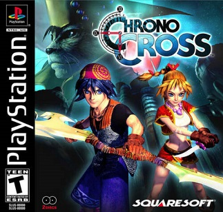
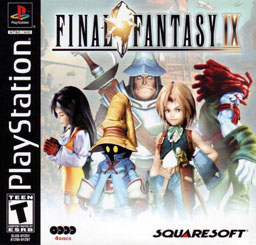

JRPGs
-
Chrono Cross
- 
- Developer: Square
- Release Year: 1999
- Wiki Entry: Link
- Dave's Thoughts: A near flawless game with a unique combat system and peerless music.
-
Final Fantasy IX
- 
- Developer: Square
- Release Year: 2000
- Wiki Entry: Link
- Dave's Thoughts: The pinnacle of the acclaimed Final Fantasy series.
A refinement of every game before and unmatchced since.